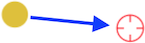
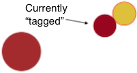
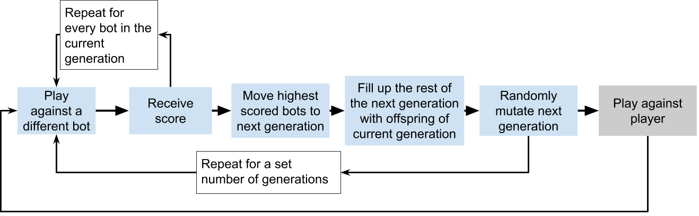
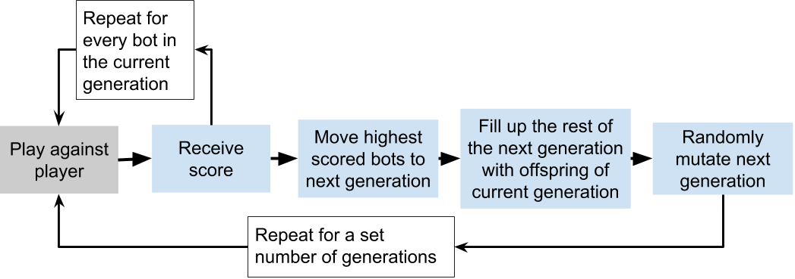
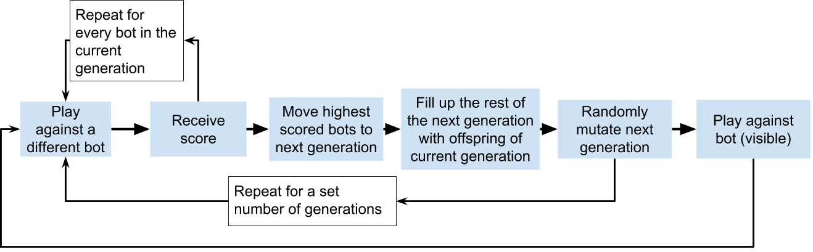

What is GakuBot?
GakuBot is an experimental machine learning game.
This game simulates two players both trying to get to the same target. The winner is the first player to reach the target. For more information on how to play, see How do I play?
This game has several different "modes", which are really just ways of training the AI to learn how to play the game. For more information on how to play, see What versions of GakuBot exist?
The aim of the game is for both yourself and the AI to learn how to play, and to observe how the AI learns the game.
How do I play?
Your character is a yellow circle.
Your aim is to get "home" (the brown circle in the middle of the screen) before your opponent, the pink circle, does.
You move it by clicking to where you would like it to go to, and it will start moving in that direction.
The only other mechanic of the game is that you can "tag" your opponent by touching them. Once you tag them, the one of you who is closest to home is frozen still for a few seconds. Therefore, be wary of pulling out ahead of your opponent in case they tag you and romp on home to victory.
For the best introduction, it is recommended that beginners start at GakuBot Formulate
Once you are satisfied with the mechanics of the game, feel free to check out the other versions of this game.
How does it work?
This game works by using neural networks to make decisions in the game.
In very basic terms, a neural network is a set of nodes which have inputs connected to them, and produce a certain output if the given inputs are high enough or low enough. This output can then either be connected to other nodes (hence, it is a network), or it can be the fina output of said network. For and introduction to how neural networks work, read this.
The neural networks in this game have their position and the opponent's position fed into them as inputs, and then output a direction in which to move.
There are two main ways in which we train these networks: supervised training and unsupervised training.
Unsupervised training
Unsupervised training in this game works by letting the bot play the game by itself, and then appraising its performance.
To start, 50 bots are created, and are all randomly assigned a neural network structure. So, for example, some bots will move towards the objective, some will move away, and others will not move at all.
The performance of these 50 bots is then scored, with bots that end up close to the objective getting a high score, and bots that end up far getting a low score.
Then, the horde of bots is evolved, with the highest scoring bots remaining unchanged, and then the rest of the next genetaion of bots are greated by taking two "parents" from the current generation, randomly mixing their networks together, and then adding this offspring to the next generation of bots. The whole next generation is then mutated, after which the cycle of testing, evaluation, selection, reproduction and mutation begins again.
 Courtesy of blog.sicara.com
Courtesy of blog.sicara.comThis way, the bots that perform best laregly persist through many generations, with the ones that perform poorly replaced by randomly mutated offspring of the previous generation. This evolution is called a genetic algorithm, and more can be found out about it here.
Supervised training
Like the unsupervised learning bots, Gakubot's supervised learning bots also use a neural network to make their decisions.
However, the way that this bot learns is markedly different to the unsupervised learning bot.
This bot observes the player playing 5 rounds of the game, and uses the player's actions as a guide for how to play the game.
The bot first receives the input that the player recieves at any one moment (i.e. the player's location and the opponents location) and then is told to make a guess as to what it should do in that situation.
Then, the bot's guess is compared against the action the playeractually carried out.
If the guess is the same as the player's action, then no change of the network is required. However, if the guess is not close to the player's action, then the network will be altered in such a way as to nudge it closer to producing an answer similar to the player's action.
This process is repeated over thousands of user actions, and slowly the nudges to improve the network make it start to produce output similar to the player's. This process is called backpropagation.
How they compare
The pros and cons for both supervised and unsupervised learning for a task such as playing against a human competitor are numerous.
For unsupervised learning, the main strength is that there is a possibility that a bot will create a strategy that is much better than any that their human counterpart can devise, and be highly successful in the game.
The main weakness is that this could take many iterations to happen, and due to the random nature of the mutation of the networks, there is the possibility that this will not occur at all.
For supervised learning, the main strength is that the learning can be done very cheaply and quickly, simply taking the user input as a blueprint for how to play.
The main weakness is that this puts an upper bound on the proficiency of the bot, only allowing it to be as good as the human facing it.
Why is it interesting?
Try to scroll this section and look at the navigation list while scrolling!
What Versions of GakuBot exist?
GakuBot Formulate
GakuBot Formulate is an unsupervised learning algorithmn, whereby the computers plays against itself thousands of times in order to learn how to play.
GakuBot Apprentice
Try to scroll this section and look at the navigation list while scrolling!
GakuBot Mimic
Try to scroll this section and look at the navigation list while scrolling!
GakuBot Exhibit
Try to scroll this section and look at the navigation list while scrolling!
Who made GakuBot (and why)?
The purpose of this game was for it to be both fun and educational
Exactly determining what qualifies as fun is a difficult task. However, I have personally had a bit of fun both making and playing this game. I hope you do to.
As for the educational aspects of this game, I hope that anyone who plays this game comes away with either a better understanding of how AI works, or an urge to learn more. More than anything, I hope that this game simply shows what a modern AI is capable of.
Contact
Try to scroll this section and look at the navigation list while scrolling!